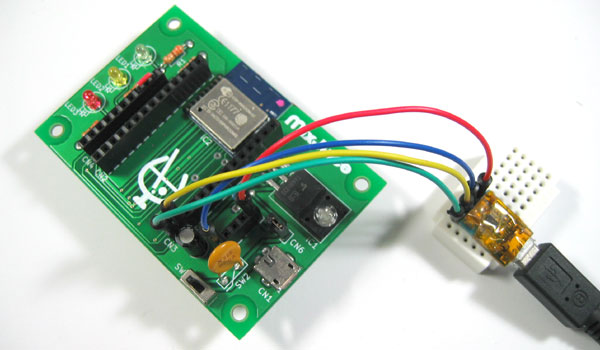
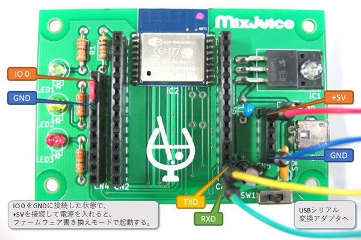
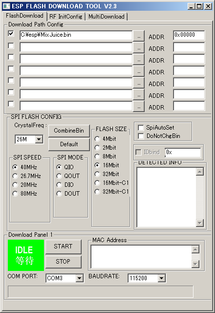
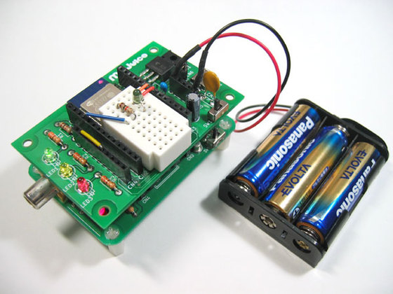
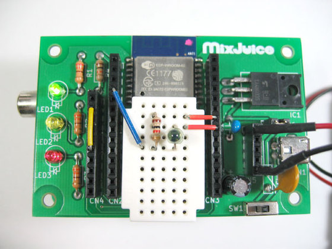

IchigoJam + MixJuiceで製作するIoTセンサ
IchigoJamは、株式会社jig.jpが開発した教育用パソコンとして使用可能なマイコンボードです。マイコンにはNXP社のLPC1114が用いられ、jig.jp社が独自開発した IchigoJam BASIC によるプログラミングが可能です。ここでは、IchigoJam専用のワイヤレス拡張シールドMixJuice(開発元＝NaturalStyle社、販売＝PCN社)との組み合わせで、センサ情報を送信する実験をしてみましょう。
照度センサNJL7502Lのコレクタ(アノード)側をVcc(3.3V)へ、エミッタ(カソード)側をIchigoJamのIN2端子へ接続します。また、IN2端子とGNDとの間に10kΩ～100kΩ程度の抵抗器を接続します。
MixJuiceの基板上にもIchigoJamと同じコネクタが出ているので、写真のように実装すると良いでしょう。
IoTセンサ用クラウドサービスAmibientAmbientはIoTセンサのセンサ値をグラフ化して表示するクラウドサービスです。下記のページにアクセスして、ユーザ登録を行い、チャンネルを作成すると、①チャネルID、②リードキー、③ライトキーが発行されます。このうちの①チャネルIDと③ライトキーをIchigoJam上で作成するプログラムに組み込むことで、IchigoJamからAmbientへデータ送信が行えるようになります。
IchigoJam BASIC用サンプルプログラム(1)実験用:約30秒ごとに送信実際に動かす前に、まずはBASICのサンプルプログラムから紹介します。このサンプルプログラム(1)は、約30秒おきにIN2端子に接続した照度センサの値をAmbientへ送信します。
ただし、行番号2のMJ PCTコマンドはMixJuiceのファームウェアのVersion 1.2からサポートされた命令です。古いファームウェアでは動作しません(次節に詳細)。
IchigoJamのファームウェアにはバージョン1.1.1以上を使用してください。行番号2～5には、MixJuiceへ送信するコマンドが書かれていますが、赤文字の部分を修正する必要があります。行番号3の部分にはAmbientから発行された①チャネルIDを、行番号4には③ライトキーを書いてください。
プログラム(1)の実験に必要なもの
MixJuice用ファームウェアのバージョンアップこの実験にはMixJuiceのファームウェアVer 1.2以上が必要です。MixJuiceのファームウェアのバージョンをIchigoJamから確認するには、MixJuiceをIchigoJamへ取り付けた状態で、以下のコマンドを入力します。
MixJuiceのファームウェアは下記からダウンロードすることができます。PCN社から販売されている純正のMixJuiceだけでなく、市販のワイヤレスモジュールESP-WROOM-02へ書き込むことも可能です。ただし無断で配布することはできません。
書き換えにはUSBシリアル変換アダプタと、ファームウェアを書き換ツールが必要です。書き込みツールはESPモジュールの開発元のEspressifからダウンロードすることができます。ESP8266 Flash Download Tools v2.3または2.4、V3.3.6などを使用してください（バージョンによってはMixJuiceに対応していない）。
ファームウェア書き換え時は、MixJuiceをIchigoJamへ接続しないでください。MixJuiceのIO 0(CN4の一番奥)をGNDに接続し、USBシリアル変換アダプタを接続します。MixJuiceの電源を入れると、ファームウェア書き換えモードで起動し、LED 1が薄く点灯します。


ESP8266 Flash Download Toolsを起動するとコンソール画面(CLI画面)と以下のようなGUI画面が開きます。一番上のボックスへファイル「mixjuice.bin」を入力し、書き込みます。

書き込みが完了したら、USBシリアル変換アダプタやIO0に接続したジャンパ線などを取り外してください。
プログラムの実行方法それでは、MixJuiceをIchigoJamへ取り付けて動かしてみましょう。MixJuiceとIchigoJamの電源はマイクロUSB端子から供給します。両方のマイクロUSB端子に電源を供給する方法のほか、MixJuiceのマイクロUSB端子から供給した電源を、IchigoJamのCN5へ供給することも可能です。
プログラムを動かす前に、MixJuiceをインターネットにWi-Fi経由で接続する必要があります。Wi-Fi接続するには、下記のコマンドをIchigoJamから入力してください(SSIDとPASSはお手持ちの無線LANアクセスポイントに書かれた内容を使用してください)。
接続が完了したら、プログラムを入力(または転送)し、IchigoJam上でRUNコマンドを実行すると、以下のようなメッセージが表示されるとともに、Ambientへ照度センサの値を送信します。
IchigoJamを使ったIoTセンサをクラウドサービスAmbientへ送信する方法について説明しましたが、電源にはUSBアダプタを使用しました。次は乾電池を使った実験です。 |
単3アルカリ電池を使用して長期間駆動今度は電源に単3アルカリ電池3本を使用して長期間の駆動が可能なIoTセンサを製作してみましょう。プログラム(1)が動作中の消費電流はおよそ90mAです。2000mAhの単3電池だと22時間ほどしか動作しません。そこで、送信頻度を下げ、送信していない期間中はスリープにして、電池を長持ちさせます(2か月程度の動作が可能になる)。

単3アルカリ電池で長時間の駆動が可能な IchigoJam + MixJuiceによるIoTセンサの製作例。IchigoJamとMixJuiceのスリープ機能を使用して実用的なIoTセンサの実験を行った。 乾電池駆動を実現するための工夫単3アルカリ乾電池で長期間の駆動を実現するには、動作時間をなるべく短くし、何もしていない時間を増やすことで平均の消費電力を抑えます。動作中の90mAに対し、何もしていない待機中の消費電流は1mAほどまで下がります。例えば60分に一度だけ送信し、残り時間は待機するような動作を行えば、何か月も動かし続けることができるようになります。
今回の実験では、このような乾電池駆動を実現するためのポイントについて説明します。このままでも1～2か月程度は動作することを確認済みです。3か月以上動かし続けるにはMixJuiceの電源回路を改造したり、スリープ時間をより長くするような改造が必要です。うまく制御すれば半年以上、持たせることも出来るでしょう。
プログラム(2)と(3)の実験に必要なもの
ハードウェアの変更プログラム(1)の実験で製作したハードウェアの電源を乾電池(直列3本)に変更します。下図右側の5ピンソケット(CN5)の一番上が電池の＋(プラス)側です。一番下が電池の－(マイナス)側です。
また、MixJuiceのスリープ機能を使用するために、ジャンパ線(黄色)を使って、MixJuice基板上のCN4の2番ピンと6番ピンを接続してください。

電源には単3電池3本を使用し、CN5へ接続する。また、MixJuiceのCN4の2番ピンと4番ピンに黄色のジャンパを接続する。照度センサNJL7502Lのコレクタ(アノード)はVcc(3.3V)へ、エミッタ(カソード)はIN2端子へ接続。IN2端子とGNDとの間には10kΩ～100kΩ程度の抵抗器を接続。 もちろん、CQ出版社「IchigoJam用コンピュータ電子工作学習キット(IF ICH-KIT)」で製作したPersonal Computer基板や Micro Computer基板でも動作します
IchigoJam BASIC用サンプルプログラム(2)乾電池駆動:約1分毎に起動約1分毎に送信を行い、送信後にスリープへ移行するサンプル・プログラムを以下に示します。行番号3と4には、Ambientから発行された①チャネルIDと③ライトキーを書いてください。
実行すると、約1分おきにIN2端子に接続した照度センサの値をAmbientへ送信します。行番号7のWの値を600くらいにしてスリープ時間を10秒くらいにしてみると分かりやすいでしょう。
より電池を長持ちさせる方法より電池寿命を延ばすには、スリープ時間を長くします。ここではスリープ時間を20分にしてみました。MixJuice側は最大約60分まで設定することが出来ます。一方、IchigoJam側のwaitコマンドは最大9分までしか指定できません。そこで、複数回に分けて実行する必要があります。ここではIchigoJamを1秒ごとに起動し、MixJuiceが動作していなければ、すぐにスリープするようにしました。
プログラムの行番号7の変数Wに測定間隔を「分」の単位で入力してください。行番号8で「秒」に変換して処理を行います。
さらに電池寿命を延ばすには、送信間隔やIchigoJamの待機間隔を長くします。低消費電力のレギュレータへ交換します。レギュレータによってはスタンバイ電流が0.1mA以下のものもあり、待機電力を大幅に削減することができるでしょう。
単4電池による実証実験で27日間(単3に換算して54日間)の動作を確認済み上記のプログラム(3)を用いて実証を行ってみました。単3電池と比べて容量が約半分の単4電池を使うことで、実験期間の短縮を行っています。
2016年12月4日に開始し、31日までの27日間の動作が確認できました。これは単3電池に換算して約54日間に相当します。冬季は電池の寿命が短くなるので、夏場の実験に比べて、若干、厳しめにつき、およそ2か月くらい動作することが分かりました。
関連情報IchigoJam用コンピュータ電子工作学習キット(IF ICH-KIT)
http://www.geocities.jp/bokunimowakaru/diy/ichigojam/pcb.html |